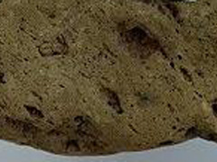

생성원리

정의 Definition
화성암은 용융상태의 마그마가 식어 고결된 암석으로 성인에 따라 크게 분출암과 관입압으로 구분됩니다. 화산암은 마그마가 지표에 나와 고결된 분출암으로 빠르게 냉각되어 비정질, 세립질, 유리질의 결정조직을 보이며 휘발물질이 빠져나와 생긴 기공이 특징입니다. 대표적인 화산암은 유문암, 응회암, 안산암, 현무암, 부석, 암재 등이 있습니다.
종류 Class
총 9종의 이미지가 있습니다.


이름 (name)
흑요암(obsidian)
특 성 (characteristics)
- 가) 개요
- 현미경으로도 입자의 식별이 어려운 유리질의 화산암으로 깨진 자국이 유리광택을 내며 패각상(concoidal)이다. 흑색 외에 적색, 녹색, 갈색을 띠는 것도 있으며 1% 이하의 수분을 함유하고 있다. 용암이 분출하여 급속히 냉각되어 만들어 졌으며, 반정이 없고 간혹 구과(球顆, spherulite)를 포함한다. 화학성분은 대부분 규산이 풍부한 유문암(rhyolite)에 가까우며, 다량의 물을 함유한 진주암(perlite)이나 송지암(pitchstone)과 구별된다. 가열하면 팽창하는 특성을 가져 내화연료로 이용되며 아름다운 것은 가공하여 장신구로 이용되기도 한다.
나) 광물구성
유문암과 비슷한 광물구성을 가져,
| 석영(quartz) | 10~40% |
| K-장석(potash-feldspar) | 30~60% |
| 사장석(plagioclase) | 0~35% |
| 유색광물[흑운모(biotite), 각섬석(hornblend)] | 10~35% |
다) 산출지 : __, 미국(사진좌측부터)
이름 (name)
조면암(trachyte)
특 성 (characteristics)
- 가) 개요
- 섬장암(syenite)과 화학성분을 같이하는 화산암으로, 풍화되면 거친 표면을 나타내어 이름지어졌다. 회색 또는 담홍색을 띠며 반정으로 정장석을 가진다. 석기는 K-장석과 사장석으로 되어 있고, 소량의 흑운모, 각섬석(amphibole), 휘석을 포함하며 드물게 석기가 유리질인 경우도 있다. 현미경의 도움없이는 입자의 식별이 어려운 비현정질이며, 석영조면암에 비해 규산이 적고 알칼리 성분이 많다.
나) 광물구성
| K-장석(potash-feldspar) | 45~80% |
| 사장석(plagioclase) | 25~5% |
| 유색광물[흑운모(biotite), 각섬석(amphibole) 등] | 30~10% |
다) 산출지 : 슬로바키아, __(사진좌측부터)
이름 (name)
유문암(rhyolite)
특 성 (characteristics)
가) 개요
광물 및 화학성분은 화강암과 비슷하며, 마그마가 지표에서 빠르게 냉각되어 미정질 혹은 유리질 조직을 보이는 화산암이다. 담홍색, 담회색, 백색을 보이며 화산암체가 평행하게 유동한 흔적이 나타나는 유상구조가 특징이다. 석영조면암(quartz-trachyte)에 유상구조가 나타나면 유문암이라고 한다.
나) 광물구성
화강암의 광물구성과 유사하여,
| 석영(quartz) | 10~40% |
| K-장석(potash-feldspar) | 30~60% |
| 사장석(plagioclase) | 0~35% |
| 유색광물[흑운모(biotite), 각섬석(amphibole) 등] | 10~35% |
이름 (name)
응회암(tuff)
특 성 (characteristics)
- 가) 개요
- 화산분출로 인하여 공기 중으로 날아가는 고체물질을 화산쇄설물이라 하는데, 이 중 지름이 2mm이하인 고체물질을 화산분진(volcanic ash)이라 한다. 화산활동에 의해 방출된 이러한 작은 입자의 화산분진이 퇴적, 고화되어 생성된 화산쇄설암(pyroclastic rock)을 응회암(tuff)이라 한다.
- 나) 광물구성
- 화산쇄설암의 광물 구성은 분출 당시의 주위 암석종류와 분출된 마그마의 암질에 따라 매우 다양하게 나타나며 퇴적과 암석화 과정이 매우 불균질하게 이루어지므로 암석 내 광물들을 분석하여 일반화하기 어렵다.
다) 산출지 : 한국
이름 (name)
안산암(andesite)
특 성 (characteristics)
- 가) 개요
- 현무암 다음으로 흔한 화산암으로 담회색, 회색, 갈색, 갈회색을 띠며 섬록암과 광물조성을 같이 한다. 사장석(andesine)을 주로하고 각섬석, 휘석, 흑운모 등의 반정이 유리질, 미정질의 석기 속에 들어 있는 중성암이다. 안데스(Andes) 산맥의 여러 화산에서 발견되어 안산암(andesite)이라 이름지어졌다.
나) 광물구성
섬록암의 광물구성과 동일하여,
| 사장석(andesine) | 55~70% |
| 유색광물[각섬석(hornblend) or 흑운모(biotite)] | 40~25% |
| 소량광물[휘석(pyroxene), 석영(quartz) 등] | 5~10% |
다) 산출지 : __, 대구, 미국(사진좌측부터)
이름 (name)
현무암(basalt)
특 성 (characteristics)
- 가) 개요
- 흑색 혹은 암회색의 치밀한 고철질 화산암으로 주성분광물은 Ca-사장석과 휘석이며 이들이 반정을 이루기도 하며 석기는 반정질 또는 유리질인 경우도 있다. 주로 용암류에 의해 산출되며 암맥, 암상으로도 산출된다. 용암류인 경우에는 용암내 기체가 빠져나가 기공이 나타나는 다공상 구조가 나타난다.
나) 광물구성
| 사장석[조회장석(labradorite)] | 40~60% |
| 유색광물[휘석(pyroxene), 감람석(olivine)] | 55~35% |
다) 산출지 : 미국, __, 제주(사진좌측부터)
이름 (name)
행인상현무암(amygdaloidal basal)
특 성 (characteristics)
- 가) 개요
- 기공들이 다른 광물질로 채워진 것을 행인상(amygdaloidal) 구조라 한다. 행인상 현무암은 이러한 행인상 구조가 나타나는 현무암을 말하며 기공에 채워진 광물질로는 담백석(opal), 불석(zeolite), 방해석(calcite) 등이 있다.
나) 광물구성
현무암과 광물구성이 동일하여,
| 사장석[조회장석(labradorite)] | 40~60% |
| 유색광물[휘석(pyroxene), 감람석(olivine)] | 55~35% |
다) 산출지 : 대구, 미국, 미국(사진좌측부터)
- 
이름 (name)
부석(pumice)
특 성 (characteristics)
- 가) 개요
- 유리질인 용암에 기공이 많아 다공상 구조를 보이며 특히 물에 뜰 정도로 가벼운 암석이다. 화학성분은 유문암에 가까운 것이 대부분이며 백색 혹은 담회색을 띤다.
나) 광물구성
상대적으로 가벼운 화산분진들이 다양하게 섞여있어 광물구성의 분포범위가 넓으나, 대부분 유문암과 광물성분을 같이한다.
| 석영(quartz) | 10~40% |
| K-장석(potash-feldspar) | 30~60% |
| 사장석(plagioclase) | 0~35% |
| 유색광물[흑운모(biotite), 각섬석(hornblend)] | 10~35% |
다) 산출지 : 미국, 미국, __(사진좌측부터)

이름 (name)
암재(scoria)
특 성 (characteristics)
- 가) 개요
- 산성 마그마 기원의 부석과 달리 암재는 염기성 및 중성 마그마에 유래되었고, 기공이 많으나 부석에 비해 파편이 무거워 물에 뜨지 않는다. 대부분 암회색이며 유리질과 결정이 섞여 있다.
- 나) 광물구성
- 암재는 분출되는 용암의 성분과 광물구성을 같이하나, 화산분출시 암체에서 분리된 여러 종류의 암편들도 같이 포함될 수 있어 명확한 광물구성의 분석이 어렵다.
다) 산출지 : 미국